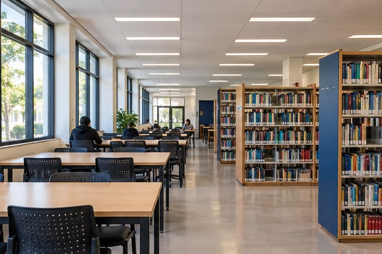
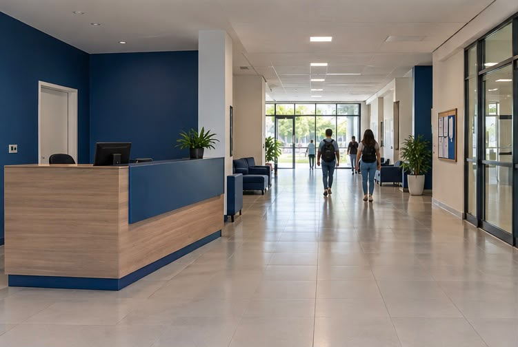

Biblioteca
Bloco A, segundo andar · segunda a sexta, das 8h às 20h.

Interior da biblioteca do campus, um ambiente silencioso, repleto de livros e recursos para estudos e pesquisas.
Guia do Campus
Escolha o seu destino por aqui.
Bloco A, segundo andar · segunda a sexta, das 8h às 20h.

Interior da biblioteca do campus, um ambiente silencioso, repleto de livros e recursos para estudos e pesquisas.
Bloco C, sala 204 · segunda a sexta, das 8h às 20h.

Área destinada aos estudos e práticas de informática, equipada com computadores e softwares necessários.
Térreo · segunda a sexta, das 8h às 22h.

Aqui você pode encontrar informações sobre o campus, horários de funcionamento e serviços disponíveis.